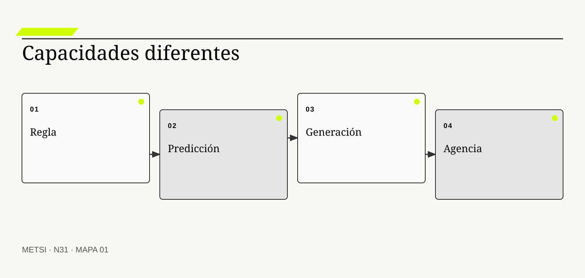
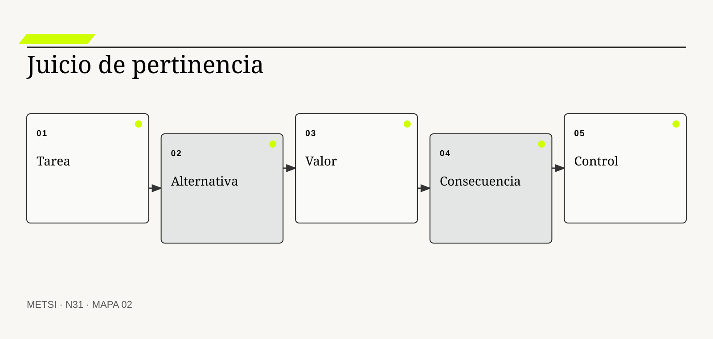
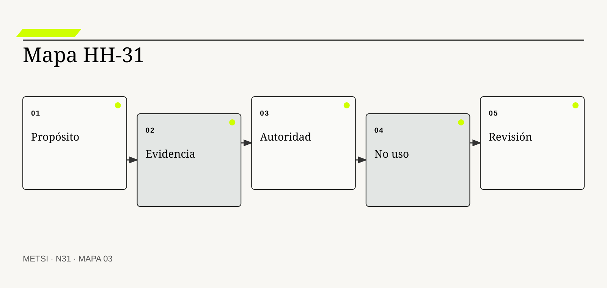

O
OECD
Actualiza una definición funcional de sistema de inteligencia artificial.

N31 distingue reglas, predicción, generación y agencia, y convierte la pregunta por la inteligencia artificial en una elección de capacidad situada…
Reglas, predicción, generación y agencia: cuándo la IA es pertinente
Ruta de lectura: problema, distinciones, decisiones, prueba, transferencia y preparación.
Nota. SIN NUM. identifica aparatos de orientación y referencia.
Seis voces para ampliar, contrastar y discutir N31.
Actualiza una definición funcional de sistema de inteligencia artificial.

Organiza gobierno, mapeo, medición y manejo del riesgo de IA.

Propone competencias técnicas, éticas, humanas y de diseño de sistemas.
Distinguen agentes, objetivos, entornos y racionalidad limitada.

Separa asociación, intervención y explicación causal.
Vincula inteligencia artificial responsable con diseño, uso y gobierno.
N31 no resume estas fuentes ni las convierte en receta. Las pone en tensión para construir juicio profesional.
¿Cómo distinguir capacidades de inteligencia artificial y decidir si aportan valor frente a una regla, una búsqueda o un proceso mejor diseñado?

N31 distingue reglas, predicción, generación y agencia, y convierte la pregunta por la inteligencia artificial en una elección de capacidad situada de pertinencia.
Hotel Horizonte prueba un agente que recibe mensajes, consulta disponibilidad y propone compensaciones. En la demostración responde con fluidez y resuelve una reserva duplicada. Al día siguiente concede una mejora que Comercial nunca ofreció y modifica un dato que Recepción no puede revertir.
La discusión inicial pregunta si el modelo es suficientemente potente. La pregunta profesional es anterior: qué tarea se intenta resolver, qué clase de capacidad requiere, qué consecuencia puede producir y por qué una solución más simple no alcanza.
Reglas, predicción, generación y agencia no son grados de una misma tecnología. Organizan relaciones distintas entre entradas, inferencias, acciones y autoridad. Mezclarlas impide elegir pruebas y controles proporcionales.
El equipo de pertinencia descompone el recorrido. Una regla valida requisitos, un modelo estima cancelación, un generador redacta una respuesta y un agente elige herramientas y actúa. Cada componente recibe límites, evidencia y una vía de salida diferentes.
La pertinencia no se demuestra con una demo. Se sostiene comparando alternativas, conociendo el costo del error y explicando qué juicio permanece en manos humanas.
N31 abre el Bloque G. Recibe de N30 señales e incidentes operativos y los usa para decidir si incorporar inteligencia artificial sin delegar el juicio.
HH-31 construye un expediente de pertinencia para el ingreso del huésped. Separa reglas deterministas, predicciones, generación de lenguaje y acciones con herramientas. Para cada capacidad registra propósito, población, alternativa sin IA, autoridad, daño posible, evidencia, supervisión y condición de no uso.
N31 distingue reglas, predicción, generación y agencia, y convierte la pregunta por la inteligencia artificial en una elección de capacidad situada de pertinencia.
N30 deja evidencia y decisiones abiertas que N31 utiliza sin reabrir su contenido. N31 distingue reglas, predicción, generación y agencia, y convierte la pregunta por la inteligencia artificial en una elección de capacidad situada de pertinencia.
N32 evaluará tareas, cobertura, severidad, desigualdad, robustez y supervisión real antes de asignar autonomía. N31 no decide todavía si el desempeño observado resulta suficiente.
OECD distingue sistemas por inferencia, objetivos, salidas e interacción con el entorno. En N31, ese aporte pone a prueba decisiones concretas y no funciona como respaldo ornamental. Su alcance se conserva en N31: ninguna referencia sustituye la evidencia de pertinencia del caso ni la autoridad de uso necesaria para intervenir.
NIST incorpora gobierno, medición y manejo del riesgo de inteligencia artificial. En N31, ese aporte pone a prueba decisiones concretas y no funciona como respaldo ornamental. Su alcance se conserva en N31: ninguna referencia sustituye la evidencia de pertinencia del caso ni la autoridad de uso necesaria para intervenir.
NIST aporta una fuente contrastable para definir alcance, evidencia y condiciones de revisión. En N31, ese aporte pone a prueba decisiones concretas y no funciona como respaldo ornamental. Su alcance se conserva en N31: ninguna referencia sustituye la evidencia de pertinencia del caso ni la autoridad de uso necesaria para intervenir.
UNESCO integra perspectiva humana, ética, técnica y diseño de sistemas. En N31, ese aporte pone a prueba decisiones concretas y no funciona como respaldo ornamental. Su alcance se conserva en N31: ninguna referencia sustituye la evidencia de pertinencia del caso ni la autoridad de uso necesaria para intervenir.
UNESCO extiende el desarrollo seguro a riesgos específicos de modelos generativos. En N31, ese aporte pone a prueba decisiones concretas y no funciona como respaldo ornamental. Su alcance se conserva en N31: ninguna referencia sustituye la evidencia de pertinencia del caso ni la autoridad de uso necesaria para intervenir.
Russell, S. y Norvig, P. aportan una fuente contrastable para definir alcance, evidencia y condiciones de revisión. En N31, ese aporte pone a prueba decisiones concretas y no funciona como respaldo ornamental. Su alcance se conserva en N31: ninguna referencia sustituye la evidencia de pertinencia del caso ni la autoridad de uso necesaria para intervenir.
Pearl, J. y Mackenzie, D. aportan una fuente contrastable para definir alcance, evidencia y condiciones de revisión. En N31, ese aporte pone a prueba decisiones concretas y no funciona como respaldo ornamental. Su alcance se conserva en N31: ninguna referencia sustituye la evidencia de pertinencia del caso ni la autoridad de uso necesaria para intervenir.
Dignum, V. aporta una fuente contrastable para definir alcance, evidencia y condiciones de revisión. En N31, ese aporte pone a prueba decisiones concretas y no funciona como respaldo ornamental. Su alcance se conserva en N31: ninguna referencia sustituye la evidencia de pertinencia del caso ni la autoridad de uso necesaria para intervenir.
ISO/IEC aporta una fuente contrastable para definir alcance, evidencia y condiciones de revisión. En N31, ese aporte pone a prueba decisiones concretas y no funciona como respaldo ornamental. Su alcance se conserva en N31: ninguna referencia sustituye la evidencia de pertinencia del caso ni la autoridad de uso necesaria para intervenir.
European Union conecta uso de inteligencia artificial con riesgo, obligaciones y supervisión. En N31, ese aporte pone a prueba decisiones concretas y no funciona como respaldo ornamental. Su alcance se conserva en N31: ninguna referencia sustituye la evidencia de pertinencia del caso ni la autoridad de uso necesaria para intervenir.
Amershi, S. et al. aportan pautas para expectativa, control, corrección y recuperación. En N31, ese aporte pone a prueba decisiones concretas y no funciona como respaldo ornamental. Su alcance se conserva en N31: ninguna referencia sustituye la evidencia de pertinencia del caso ni la autoridad de uso necesaria para intervenir.
Shneiderman, B. aporta una fuente contrastable para definir alcance, evidencia y condiciones de revisión. En N31, ese aporte pone a prueba decisiones concretas y no funciona como respaldo ornamental. Su alcance se conserva en N31: ninguna referencia sustituye la evidencia de pertinencia del caso ni la autoridad de uso necesaria para intervenir.

Una regla produce una salida especificada cuando se cumplen condiciones explícitas. La definición fija el objeto de decisión. Si el equipo de N31 no puede expresar qué compromiso organiza, la categoría funciona como etiqueta y no como instrumento.
No aprende una relación estadística ni necesita lenguaje generativo. La distinción evita que una palabra familiar oculte otro mecanismo. En N31, confundirlos cambia qué se observa, qué se acepta como avance y quién debe intervenir.
En regla determinista, el recorrido causal debe mostrar qué condición habilita la acción, qué transformación ocurre y quién absorbe el resultado. Regla determinista se operacionaliza delimitando propósito, población, entradas, autoridad, acción, consecuencia y condición de revisión. El recorrido se contrasta con una alternativa más simple y con un escenario adverso antes de ampliar compromiso. Si un salto depende sólo de una explicación oral, la estrategia todavía no puede gobernarlo.
La evidencia relevante para regla determinista no se limita al resultado promedio. La evidencia integra una prueba previa, resultados desagregados y el episodio siguiente: El validador de identidad rechaza un documento vencido También conserva las decisiones humanas y automáticas que produjeron ese resultado. N31 busca además casos negativos, diferencias entre poblaciones y señales de que la explicación elegida podría ser insuficiente.
Ejemplo. El validador de identidad rechaza un documento vencido En N31, el episodio vuelve visible la relación entre ritmo, autoridad, evidencia y capacidad de reparación.
El tradeoff central de regla determinista aparece entre anticipar y preservar opciones. Anticipar puede reducir coordinación y también fijar una premisa prematura; preservar opciones puede producir aprendizaje y también demorar una protección necesaria. La elección debe declarar cuál de esos costos acepta, durante cuánto tiempo y para quién.
La revisión de pertinencia de regla determinista termina con una pregunta de uso: ¿qué podría decidir ahora una persona que antes no podía? En N31, la respuesta debe nombrar una acción, una restricción y una evidencia, no sólo una comprensión mejorada.
Operacionalizar regla determinista requiere asignar una unidad observable. El equipo de pertinencia define qué episodio contará, desde qué momento, con qué población y bajo qué fuente. Después compara al menos un caso ordinario con otro que fuerce excepción. Esta precisión en N31 evita que una conclusión general se sostenga sólo en ejemplos convenientes.
La decisión profesional no termina en adoptar regla determinista. Se compara una ruta principal con una explicación rival, se explicita quién queda expuesto y se conserva un modo de revisar. Las reglas también contienen errores de política y necesitan owner y versión. El límite forma parte del diseño y no una nota posterior.
Una predicción estima una variable desconocida a partir de patrones y datos. Conviene comenzar por su función profesional. Si el equipo de N31 no puede expresar qué compromiso organiza, la categoría funciona como etiqueta y no como instrumento.
No explica causalidad ni prescribe por sí sola una acción. El contraste importa porque conduce a pruebas distintas. En N31, confundirlos cambia qué se observa, qué se acepta como avance y quién debe intervenir.
El mecanismo de predicción no se presume por el nombre. Predicción se operacionaliza delimitando propósito, población, entradas, autoridad, acción, consecuencia y condición de revisión. El recorrido se contrasta con una alternativa más simple y con un escenario adverso antes de ampliar compromiso. Debe localizarse dónde comienza, qué relaciones activa, qué demora introduce y qué capacidad de reparación queda disponible cuando la expectativa no se cumple.
Una afirmación sobre predicción gana fuerza cuando puede reconstruirse desde fuentes independientes. La evidencia integra una prueba previa, resultados desagregados y el episodio siguiente: Un modelo estima probabilidad de cancelación También conserva las decisiones humanas y automáticas que produjeron ese resultado. La ausencia de señal también se interpreta: puede significar estabilidad, mala observación o exclusión del caso que más importa.
Ejemplo. Un modelo estima probabilidad de cancelación En N31, el episodio vuelve visible la relación entre ritmo, autoridad, evidencia y capacidad de reparación.
La escala modifica predicción. Una solución válida para un equipo puede fallar cuando atraviesa sedes, turnos o proveedores porque aumenta la distancia entre señal y autoridad. Antes de ampliar, N31 prueba si la misma decisión conserva significado y reparación bajo esa nueva distribución.
Para evitar consenso aparente, predicción se revisa con alguien afectado y con alguien responsable de reparar. Las dos perspectivas pueden valorar resultados diferentes y obligan a declarar la prioridad elegida.
En la práctica, predicción atraviesa más de un área. Se identifican handoffs, esperas, decisiones y datos que cada participante puede ver. Cuando dos áreas usan evidencia distinta en N31, el expediente conserva la divergencia hasta determinar si representa error, perspectiva legítima o una brecha que la estrategia debe resolver.
En una revisión, predicción debe responder tres preguntas: qué mejora, qué desplaza y qué vuelve más difícil de revertir. La probabilidad pierde sentido fuera de la población y ventana evaluadas. Si esas respuestas cambian, también debe cambiar el compromiso, aunque el trabajo previo haya sido técnicamente correcto.
Un sistema generativo produce contenido nuevo condicionado por instrucciones y contexto. El concepto adquiere valor cuando cambia una elección de capacidad. Si el equipo de N31 no puede expresar qué compromiso organiza, la categoría funciona como etiqueta y no como instrumento.
Fluidez y plausibilidad no equivalen a verdad ni autorización. Su vecino conceptual puede parecer equivalente y no lo es. En N31, confundirlos cambia qué se observa, qué se acepta como avance y quién debe intervenir.
Comprender generación exige seguir la decisión en el tiempo. Generación se operacionaliza delimitando propósito, población, entradas, autoridad, acción, consecuencia y condición de revisión. El recorrido se contrasta con una alternativa más simple y con un escenario adverso antes de ampliar compromiso. La delimitación distingue condición, intervención, señal temprana y consecuencia para evitar atribuir a una práctica un efecto producido por otro cambio simultáneo.
La comparación de pertinencia de generación debe formularse antes de conocer el resultado. La evidencia integra una prueba previa, resultados desagregados y el episodio siguiente: El asistente redacta una respuesta al huésped También conserva las decisiones humanas y automáticas que produjeron ese resultado. Se registra qué observación sostendría continuar, cuál obligaría a adaptar y cuál activaría detención o escalamiento.
Ejemplo. El asistente redacta una respuesta al huésped En N31, el episodio vuelve visible la relación entre ritmo, autoridad, evidencia y capacidad de reparación.
El tiempo también altera generación. Una evidencia suficiente para explorar puede ser insuficiente para operar de forma permanente. Por eso se separan prueba local, compromiso transitorio y condición estable, y cada estado conserva fecha, alcance y responsable de revisión.
El registro de generación conserva una explicación rival. Si esa alternativa predice mejor el episodio siguiente, el equipo cambia de curso sin reescribir retrospectivamente lo que creía saber.
La gobernanza de generación incluye quién puede proponer, aprobar, ejecutar, observar y reparar. Esas funciones no se presumen por cargo ni por permiso técnico. N31 las prueba en un escenario donde falta la persona habitual, porque una capacidad que sólo funciona con conocimiento privado todavía no pertenece a la organización.
El juicio sobre generación incluye distribución de consecuencias. Toda afirmación material necesita fuente, límite y revisión proporcional. Una mejora agregada no alcanza si concentra espera, riesgo o trabajo invisible en un grupo sin autoridad para discutir la decisión.
Un sistema agente selecciona pasos, usa herramientas y modifica estados para perseguir un objetivo. La definición fija el objeto de decisión. Si el equipo de N31 no puede expresar qué compromiso organiza, la categoría funciona como etiqueta y no como instrumento.
No es sólo una conversación más larga ni automatización tradicional. La distinción evita que una palabra familiar oculte otro mecanismo. En N31, confundirlos cambia qué se observa, qué se acepta como avance y quién debe intervenir.
La explicación operacional de agencia conecta personas, reglas y tecnología. Agencia se operacionaliza delimitando propósito, población, entradas, autoridad, acción, consecuencia y condición de revisión. El recorrido se contrasta con una alternativa más simple y con un escenario adverso antes de ampliar compromiso. Esa conexión permite decidir qué parte puede modificarse localmente y cuál requiere coordinación con otras autoridades o capacidades.
Para auditar agencia, conviene combinar evidencia de diseño, ejecución y consecuencia. La evidencia integra una prueba previa, resultados desagregados y el episodio siguiente: El agente consulta inventario y ofrece una alternativa También conserva las decisiones humanas y automáticas que produjeron ese resultado. Ninguna fuente domina automáticamente; una especificación correcta puede convivir con una operación dañina.
Ejemplo. El agente consulta inventario y ofrece una alternativa En N31, el episodio vuelve visible la relación entre ritmo, autoridad, evidencia y capacidad de reparación.
Existe además una dimensión política en agencia. La opción más eficiente puede reducir la capacidad de una persona para cuestionar una elección de capacidad o trasladar trabajo sin reconocerlo. N31 registra esa distribución y no la esconde dentro de un indicador agregado.
Una prueba adversa de agencia introduce demora, ausencia de autoridad o dato incompleto. El objetivo de N31 no es cubrir todas las fallas, sino revelar si la estrategia mantiene una salida segura fuera del camino ordinario.
El indicador de agencia se elige después de formular la decisión. Puede combinar tiempo, calidad, distribución y costo de reparación. Una cifra aislada rara vez explica el mecanismo. En N31, la lectura conjunta de señales evita optimizar velocidad mientras aumenta retrabajo, exclusión o dependencia.
La condición de cierre de agencia no es perfección. Más capacidad de actuar aumenta superficie de error y exige permisos mínimos. Es evidencia suficiente para el uso previsto, riesgo residual aceptado por autoridad y una ruta clara cuando el supuesto deje de cumplirse.

La unidad de diseño es una tarea situada con propósito y consecuencia definidos. Conviene comenzar por su función profesional. Si el equipo de N31 no puede expresar qué compromiso organiza, la categoría funciona como etiqueta y no como instrumento.
No es el puesto completo ni una lista genérica de casos de uso. El contraste importa porque conduce a pruebas distintas. En N31, confundirlos cambia qué se observa, qué se acepta como avance y quién debe intervenir.
Para que tarea y propósito sea algo más que una etiqueta, debe existir una cadena examinable. Tarea y propósito se operacionaliza delimitando propósito, población, entradas, autoridad, acción, consecuencia y condición de revisión. El recorrido se contrasta con una alternativa más simple y con un escenario adverso antes de ampliar compromiso. La cadena incluye supuestos, handoffs y efectos laterales que una descripción ideal suele omitir.
El equipo de pertinencia no declara resuelto tarea y propósito por acuerdo retórico. La evidencia integra una prueba previa, resultados desagregados y el episodio siguiente: Recepción clasifica una solicitud antes de decidir También conserva las decisiones humanas y automáticas que produjeron ese resultado. Una persona ajena al diseño debe poder repetir la prueba y comprender por qué el resultado habilita una elección de capacidad concreta.
Ejemplo. Recepción clasifica una solicitud antes de decidir En N31, el episodio vuelve visible la relación entre ritmo, autoridad, evidencia y capacidad de reparación.
La mantenibilidad de tarea y propósito se prueba mediante cambio deliberado. Se modifica una regla, una fuente o una dependencia y se observa quién detecta el impacto, cuánto tarda en responder y qué información necesita. En N31, si la respuesta depende de memoria privada, la capacidad todavía es frágil.
El costo de tarea y propósito se observa tanto en presupuesto como en atención, espera, coordinación y dependencia. Lo que no figura en una factura puede seguir siendo el costo que define la viabilidad.
La transición asociada con tarea y propósito necesita un estado intermedio explícito. Durante ese período conviven reglas, versiones o capacidades diferentes. N31 declara cuál rige para cada población, cómo se comunica y qué contingencia protege a quien podría quedar entre ambos sistemas.
La delimitación de tarea y propósito evita dos extremos: conservar por inercia y cambiar por identidad metodológica. Una tarea mal recortada puede trasladar trabajo o responsabilidad. Entre ambos queda una elección de capacidad provisional con fecha, responsable y prueba de revisión.
La comparación incluye regla, búsqueda, mejora de datos, rediseño de proceso y no intervención. El concepto adquiere valor cuando cambia una elección de capacidad. Si el equipo de N31 no puede expresar qué compromiso organiza, la categoría funciona como etiqueta y no como instrumento.
No se compara un prototipo con el problema sin ninguna alternativa. Su vecino conceptual puede parecer equivalente y no lo es. En N31, confundirlos cambia qué se observa, qué se acepta como avance y quién debe intervenir.
El valor de alternativa sin ia aparece al contrastar alternativas. Alternativa sin IA se operacionaliza delimitando propósito, población, entradas, autoridad, acción, consecuencia y condición de revisión. El recorrido se contrasta con una alternativa más simple y con un escenario adverso antes de ampliar compromiso. Si dos opciones producen el mismo entregable inmediato, el mecanismo permite compararlas por aprendizaje, dependencia, riesgo residual y posibilidad de salida.
La suficiencia de evidencia para alternativa sin ia depende del costo de equivocarse. La evidencia integra una prueba previa, resultados desagregados y el episodio siguiente: Un buscador de políticas reemplaza respuestas generadas También conserva las decisiones humanas y automáticas que produjeron ese resultado. A mayor irreversibilidad o desigualdad de daño, mayor contraste, supervisión y autoridad se requieren.
Ejemplo. Un buscador de políticas reemplaza respuestas generadas En N31, el episodio vuelve visible la relación entre ritmo, autoridad, evidencia y capacidad de reparación.
Finalmente, alternativa sin ia debe convivir con otras decisiones. Optimizarla de manera aislada puede empeorar flujo, seguridad o comprensión. HH-31 N31 explicita dependencias y evita que una mejora local se presente como outcome completo del sistema.
La revisión de alternativa sin ia fija fecha y desencadenante. Puede ocurrir por incidente, cambio normativo, nueva población o evidencia acumulada. Sin esa regla en N31, una elección de capacidad provisional se vuelve permanente por olvido.
El cierre de alternativa sin ia debe sobrevivir a una revisión independiente. La evidencia, las decisiones y los límites se almacenan de manera que otra persona pueda cuestionarlos. En N31, la trazabilidad no busca eliminar desacuerdo; busca que el desacuerdo se concentre en supuestos examinables y no en recuerdos incompatibles.
La decisión de uso debe poder explicar por qué alternativa sin ia recibe cierta inversión y no otra. La opción simple puede ser preferible aun cuando produzca menos novedad. Esa explicación conecta valor, costo, aprendizaje y reparación, y permanece abierta a evidencia nueva.
El valor incremental es la mejora atribuible a la IA frente a una baseline practicable. La definición fija el objeto de decisión. Si el equipo de N31 no puede expresar qué compromiso organiza, la categoría funciona como etiqueta y no como instrumento.
No coincide con entusiasmo, adopción ni precisión aislada. La distinción evita que una palabra familiar oculte otro mecanismo. En N31, confundirlos cambia qué se observa, qué se acepta como avance y quién debe intervenir.
En valor incremental, el recorrido causal debe mostrar qué condición habilita la acción, qué transformación ocurre y quién absorbe el resultado. Valor incremental se operacionaliza delimitando propósito, población, entradas, autoridad, acción, consecuencia y condición de revisión. El recorrido se contrasta con una alternativa más simple y con un escenario adverso antes de ampliar compromiso. Si un salto depende sólo de una explicación oral, la estrategia todavía no puede gobernarlo.
La evidencia relevante para valor incremental no se limita al resultado promedio. La evidencia integra una prueba previa, resultados desagregados y el episodio siguiente: El tiempo de resolución baja sin aumentar reparaciones También conserva las decisiones humanas y automáticas que produjeron ese resultado. N31 busca además casos negativos, diferencias entre poblaciones y señales de que la explicación elegida podría ser insuficiente.
Ejemplo. El tiempo de resolución baja sin aumentar reparaciones En N31, el episodio vuelve visible la relación entre ritmo, autoridad, evidencia y capacidad de reparación.
El tradeoff central de valor incremental aparece entre anticipar y preservar opciones. Anticipar puede reducir coordinación y también fijar una premisa prematura; preservar opciones puede producir aprendizaje y también demorar una protección necesaria. La elección debe declarar cuál de esos costos acepta, durante cuánto tiempo y para quién.
La revisión de pertinencia de valor incremental termina con una pregunta de uso: ¿qué podría decidir ahora una persona que antes no podía? En N31, la respuesta debe nombrar una acción, una restricción y una evidencia, no sólo una comprensión mejorada.
Operacionalizar valor incremental requiere asignar una unidad observable. El equipo de pertinencia define qué episodio contará, desde qué momento, con qué población y bajo qué fuente. Después compara al menos un caso ordinario con otro que fuerce excepción. Esta precisión en N31 evita que una conclusión general se sostenga sólo en ejemplos convenientes.
La decisión profesional no termina en adoptar valor incremental. Se compara una ruta principal con una explicación rival, se explicita quién queda expuesto y se conserva un modo de revisar. Una mejora promedio no compensa daño grave o desigual. El límite forma parte del diseño y no una nota posterior.
La consecuencia conecta una salida del sistema con una acción que afecta recursos, derechos o experiencia. Conviene comenzar por su función profesional. Si el equipo de N31 no puede expresar qué compromiso organiza, la categoría funciona como etiqueta y no como instrumento.
Un texto informativo no tiene el mismo riesgo que una acción ejecutada. El contraste importa porque conduce a pruebas distintas. En N31, confundirlos cambia qué se observa, qué se acepta como avance y quién debe intervenir.
El mecanismo de consecuencia de decisión no se presume por el nombre. Consecuencia de decisión se operacionaliza delimitando propósito, población, entradas, autoridad, acción, consecuencia y condición de revisión. El recorrido se contrasta con una alternativa más simple y con un escenario adverso antes de ampliar compromiso. Debe localizarse dónde comienza, qué relaciones activa, qué demora introduce y qué capacidad de reparación queda disponible cuando la expectativa no se cumple.
Una afirmación sobre consecuencia de decisión gana fuerza cuando puede reconstruirse desde fuentes independientes. La evidencia integra una prueba previa, resultados desagregados y el episodio siguiente: Una recomendación termina reasignando una habitación accesible También conserva las decisiones humanas y automáticas que produjeron ese resultado. La ausencia de señal también se interpreta: puede significar estabilidad, mala observación o exclusión del caso que más importa.
Ejemplo. Una recomendación termina reasignando una habitación accesible En N31, el episodio vuelve visible la relación entre ritmo, autoridad, evidencia y capacidad de reparación.
La escala modifica consecuencia de decisión. Una solución válida para un equipo puede fallar cuando atraviesa sedes, turnos o proveedores porque aumenta la distancia entre señal y autoridad. Antes de ampliar, N31 prueba si la misma decisión conserva significado y reparación bajo esa nueva distribución.
Para evitar consenso aparente, consecuencia de decisión se revisa con alguien afectado y con alguien responsable de reparar. Las dos perspectivas pueden valorar resultados diferentes y obligan a declarar la prioridad elegida.
En la práctica, consecuencia de decisión atraviesa más de un área. Se identifican handoffs, esperas, decisiones y datos que cada participante puede ver. Cuando dos áreas usan evidencia distinta en N31, el expediente conserva la divergencia hasta determinar si representa error, perspectiva legítima o una brecha que la estrategia debe resolver.
En una revisión, consecuencia de decisión debe responder tres preguntas: qué mejora, qué desplaza y qué vuelve más difícil de revertir. El efecto depende de autoridad, interfaz e incentivos, no sólo del modelo. Si esas respuestas cambian, también debe cambiar el compromiso, aunque el trabajo previo haya sido técnicamente correcto.

La incertidumbre expresa cuánto respaldo existe para una salida y cómo cambia según contexto. El concepto adquiere valor cuando cambia una elección de capacidad. Si el equipo de N31 no puede expresar qué compromiso organiza, la categoría funciona como etiqueta y no como instrumento.
Una cifra de confianza no garantiza calibración ni comprensión humana. Su vecino conceptual puede parecer equivalente y no lo es. En N31, confundirlos cambia qué se observa, qué se acepta como avance y quién debe intervenir.
Comprender incertidumbre y calibración exige seguir la decisión en el tiempo. Incertidumbre y calibración se operacionaliza delimitando propósito, población, entradas, autoridad, acción, consecuencia y condición de revisión. El recorrido se contrasta con una alternativa más simple y con un escenario adverso antes de ampliar compromiso. La delimitación distingue condición, intervención, señal temprana y consecuencia para evitar atribuir a una práctica un efecto producido por otro cambio simultáneo.
La comparación de pertinencia de incertidumbre y calibración debe formularse antes de conocer el resultado. La evidencia integra una prueba previa, resultados desagregados y el episodio siguiente: El modelo reconoce baja certeza ante una política excepcional También conserva las decisiones humanas y automáticas que produjeron ese resultado. Se registra qué observación sostendría continuar, cuál obligaría a adaptar y cuál activaría detención o escalamiento.
Ejemplo. El modelo reconoce baja certeza ante una política excepcional En N31, el episodio vuelve visible la relación entre ritmo, autoridad, evidencia y capacidad de reparación.
El tiempo también altera incertidumbre y calibración. Una evidencia suficiente para explorar puede ser insuficiente para operar de forma permanente. Por eso se separan prueba local, compromiso transitorio y condición estable, y cada estado conserva fecha, alcance y responsable de revisión.
El registro de incertidumbre y calibración conserva una explicación rival. Si esa alternativa predice mejor el episodio siguiente, el equipo cambia de curso sin reescribir retrospectivamente lo que creía saber.
La gobernanza de incertidumbre y calibración incluye quién puede proponer, aprobar, ejecutar, observar y reparar. Esas funciones no se presumen por cargo ni por permiso técnico. N31 las prueba en un escenario donde falta la persona habitual, porque una capacidad que sólo funciona con conocimiento privado todavía no pertenece a la organización.
El juicio sobre incertidumbre y calibración incluye distribución de consecuencias. La incertidumbre útil debe cambiar una elección de capacidad o un escalamiento. Una mejora agregada no alcanza si concentra espera, riesgo o trabajo invisible en un grupo sin autoridad para discutir la decisión.
El control humano requiere información, tiempo, autoridad y una alternativa real para intervenir. La definición fija el objeto de decisión. Si el equipo de N31 no puede expresar qué compromiso organiza, la categoría funciona como etiqueta y no como instrumento.
No se satisface agregando una aprobación automática o decorativa. La distinción evita que una palabra familiar oculte otro mecanismo. En N31, confundirlos cambia qué se observa, qué se acepta como avance y quién debe intervenir.
La explicación operacional de control humano significativo conecta personas, reglas y tecnología. Control humano significativo se operacionaliza delimitando propósito, población, entradas, autoridad, acción, consecuencia y condición de revisión. El recorrido se contrasta con una alternativa más simple y con un escenario adverso antes de ampliar compromiso. Esa conexión permite decidir qué parte puede modificarse localmente y cuál requiere coordinación con otras autoridades o capacidades.
Para auditar control humano significativo, conviene combinar evidencia de diseño, ejecución y consecuencia. La evidencia integra una prueba previa, resultados desagregados y el episodio siguiente: Recepción puede rechazar la sugerencia y reparar el estado También conserva las decisiones humanas y automáticas que produjeron ese resultado. Ninguna fuente domina automáticamente; una especificación correcta puede convivir con una operación dañina.
Ejemplo. Recepción puede rechazar la sugerencia y reparar el estado En N31, el episodio vuelve visible la relación entre ritmo, autoridad, evidencia y capacidad de reparación.
Existe además una dimensión política en control humano significativo. La opción más eficiente puede reducir la capacidad de una persona para cuestionar una elección de capacidad o trasladar trabajo sin reconocerlo. N31 registra esa distribución y no la esconde dentro de un indicador agregado.
Una prueba adversa de control humano significativo introduce demora, ausencia de autoridad o dato incompleto. El objetivo de N31 no es cubrir todas las fallas, sino revelar si la estrategia mantiene una salida segura fuera del camino ordinario.
El indicador de control humano significativo se elige después de formular la decisión. Puede combinar tiempo, calidad, distribución y costo de reparación. Una cifra aislada rara vez explica el mecanismo. En N31, la lectura conjunta de señales evita optimizar velocidad mientras aumenta retrabajo, exclusión o dependencia.
La condición de cierre de control humano significativo no es perfección. Una persona puede quedar como fusible si carga responsabilidad sin capacidad. Es evidencia suficiente para el uso previsto, riesgo residual aceptado por autoridad y una ruta clara cuando el supuesto deje de cumplirse.
La fundamentación vincula una respuesta con fuentes vigentes y permite rastrear transformaciones. Conviene comenzar por su función profesional. Si el equipo de N31 no puede expresar qué compromiso organiza, la categoría funciona como etiqueta y no como instrumento.
Recuperar documentos no vuelve correcta una inferencia. El contraste importa porque conduce a pruebas distintas. En N31, confundirlos cambia qué se observa, qué se acepta como avance y quién debe intervenir.
Para que fundamentación y procedencia sea algo más que una etiqueta, debe existir una cadena examinable. Fundamentación y procedencia se operacionaliza delimitando propósito, población, entradas, autoridad, acción, consecuencia y condición de revisión. El recorrido se contrasta con una alternativa más simple y con un escenario adverso antes de ampliar compromiso. La cadena incluye supuestos, handoffs y efectos laterales que una descripción ideal suele omitir.
El equipo de pertinencia no declara resuelto fundamentación y procedencia por acuerdo retórico. La evidencia integra una prueba previa, resultados desagregados y el episodio siguiente: El asistente cita la política y su fecha de vigencia También conserva las decisiones humanas y automáticas que produjeron ese resultado. Una persona ajena al diseño debe poder repetir la prueba y comprender por qué el resultado habilita una elección de capacidad concreta.
Ejemplo. El asistente cita la política y su fecha de vigencia En N31, el episodio vuelve visible la relación entre ritmo, autoridad, evidencia y capacidad de reparación.
La mantenibilidad de fundamentación y procedencia se prueba mediante cambio deliberado. Se modifica una regla, una fuente o una dependencia y se observa quién detecta el impacto, cuánto tarda en responder y qué información necesita. En N31, si la respuesta depende de memoria privada, la capacidad todavía es frágil.
El costo de fundamentación y procedencia se observa tanto en presupuesto como en atención, espera, coordinación y dependencia. Lo que no figura en una factura puede seguir siendo el costo que define la viabilidad.
La transición asociada con fundamentación y procedencia necesita un estado intermedio explícito. Durante ese período conviven reglas, versiones o capacidades diferentes. N31 declara cuál rige para cada población, cómo se comunica y qué contingencia protege a quien podría quedar entre ambos sistemas.
La delimitación de fundamentación y procedencia evita dos extremos: conservar por inercia y cambiar por identidad metodológica. La fuente puede ser incompleta, contradictoria o inaplicable al caso. Entre ambos queda una elección de capacidad provisional con fecha, responsable y prueba de revisión.
La condición de no uso define cuándo la IA no debe iniciarse o debe retirarse. El concepto adquiere valor cuando cambia una elección de capacidad. Si el equipo de N31 no puede expresar qué compromiso organiza, la categoría funciona como etiqueta y no como instrumento.
No es resistencia genérica ni un descargo posterior. Su vecino conceptual puede parecer equivalente y no lo es. En N31, confundirlos cambia qué se observa, qué se acepta como avance y quién debe intervenir.
El valor de condición de no uso aparece al contrastar alternativas. Condición de no uso se operacionaliza delimitando propósito, población, entradas, autoridad, acción, consecuencia y condición de revisión. El recorrido se contrasta con una alternativa más simple y con un escenario adverso antes de ampliar compromiso. Si dos opciones producen el mismo entregable inmediato, el mecanismo permite compararlas por aprendizaje, dependencia, riesgo residual y posibilidad de salida.
La suficiencia de evidencia para condición de no uso depende del costo de equivocarse. La evidencia integra una prueba previa, resultados desagregados y el episodio siguiente: El hotel prohíbe compensaciones automáticas sin autoridad También conserva las decisiones humanas y automáticas que produjeron ese resultado. A mayor irreversibilidad o desigualdad de daño, mayor contraste, supervisión y autoridad se requieren.
Ejemplo. El hotel prohíbe compensaciones automáticas sin autoridad En N31, el episodio vuelve visible la relación entre ritmo, autoridad, evidencia y capacidad de reparación.
Finalmente, condición de no uso debe convivir con otras decisiones. Optimizarla de manera aislada puede empeorar flujo, seguridad o comprensión. HH-31 N31 explicita dependencias y evita que una mejora local se presente como outcome completo del sistema.
La revisión de condición de no uso fija fecha y desencadenante. Puede ocurrir por incidente, cambio normativo, nueva población o evidencia acumulada. Sin esa regla en N31, una elección de capacidad provisional se vuelve permanente por olvido.
El cierre de condición de no uso debe sobrevivir a una revisión independiente. La evidencia, las decisiones y los límites se almacenan de manera que otra persona pueda cuestionarlos. En N31, la trazabilidad no busca eliminar desacuerdo; busca que el desacuerdo se concentre en supuestos examinables y no en recuerdos incompatibles.
La decisión de uso debe poder explicar por qué condición de no uso recibe cierta inversión y no otra. No usar IA también exige sostener una alternativa operacional. Esa explicación conecta valor, costo, aprendizaje y reparación, y permanece abierta a evidencia nueva.
El instrumento organiza una elección de capacidad concreta y no una descripción total. Cada campo debe completarse con evidencia disponible, incertidumbre explícita y autoridad identificada. Si un campo todavía no puede responderse, se registra como asunto abierto y no se completa por inferencia.
HH-31 se prueba con un escenario ordinario y uno adverso. Una persona que no participó en su construcción debe poder reconstruir qué se decidió, por qué, qué permanece incierto y cuál es la próxima puerta. El cierre no exige certeza total; exige incertidumbre gobernada y una salida practicable.
Una facultad considera un asistente para responder consultas sobre correlatividades. Parte del problema es búsqueda de normativa vigente; otra parte requiere interpretar trayectorias y excepciones.
HH-31 separa recuperación de fuentes, generación de explicación y decisiones que sólo puede tomar una autoridad académica. La IA ayuda a localizar y redactar, pero no crea equivalencias ni concede excepciones.
La transferencia muestra que pertinencia significa asignar capacidades diferentes dentro de un mismo recorrido, no elegir entre usar IA o rechazarla por completo.
Un equipo usa un modelo generativo para decidir si una fecha cae dentro de un plazo reglamentario.
La tarea admite una regla verificable. El modelo agrega variabilidad, costo y opacidad sin aportar valor incremental.
La decisión madura consiste en no usar IA y reservarla para incertidumbres que justifiquen sus capacidades.
La comparación de pertinencia integral de reglas, predicción, generación y agencia: cuándo la ia es pertinente toma una elección de capacidad real y la recorre desde su origen hasta una consecuencia observable. Utiliza problema y tarea, población, capacidad requerida, alternativa sin ia para evitar que el análisis quede dividido en artefactos independientes. Cada afirmación debe encontrar una fuente, una autoridad y una condición de revisión. Cuando dos registros no coinciden, la diferencia se conserva como hallazgo hasta explicar su mecanismo.
El escenario ordinario verifica que n31 distingue reglas, predicción, generación y agencia, y convierte la pregunta por la inteligencia artificial en una elección de capacidad situada de pertinencia. El escenario adverso modifica una dependencia, introduce demora y deja ausente a la persona que suele resolver. El equipo de pertinencia observa si la estrategia detecta el cambio, limita el daño, comunica incertidumbre y activa reparación sin recurrir a conocimiento privado.
La comparación incluye una alternativa descartada. Se documenta por qué no fue elegida, qué supuesto la volvería preferible y qué costo tendría recuperarla. Este ejercicio protege opciones futuras y evita presentar la decisión actual como única solución técnicamente posible. También vuelve discutibles los costos hundidos cuando aparece evidencia nueva.
La comparación de pertinencia concluye con una defensa breve ante una audiencia ajena al equipo. Esa audiencia debe poder reconstruir el problema, objetar la evidencia de pertinencia y comprender por qué la salida propuesta es proporcional. Si sólo puede repetir la recomendación, el expediente todavía no sostiene una elección de capacidad profesional. Si puede reconocer límites y actuar ante una excepción, existe capacidad transferible.
Empezar por la herramienta simplifica una elección de capacidad que depende de propósito, evidencia y consecuencia. La velocidad inicial se paga cuando operación descubre el supuesto omitido. La reconsideración vuelve al episodio, identifica quién absorbe el costo y define una prueba antes de continuar.
Llamar IA a toda automatización parece reducir coordinación, pero confunde acuerdo con conocimiento suficiente. El equipo de pertinencia debe comparar una explicación rival, localizar autoridad y registrar qué señal cambiaría el curso elegido.
Confundir predicción con decisión desplaza incertidumbre hacia personas que no participaron de la elección. Corregirlo exige reconstruir el mecanismo, hacer visible el trabajo añadido y establecer una condición de salida proporcional al daño posible.
Confundir fluidez con conocimiento convierte una práctica en fin. La revisión pregunta qué función debía cumplir, qué evidencia produjo y por qué sigue siendo necesaria. Si la función desapareció, la práctica se adapta o se retira.
Dar herramientas sin permisos mínimos oculta una frontera. El artefacto puede cerrar y la capacidad seguir incompleta. Un escenario adverso permite observar handoffs, excepciones y reparación antes de ampliar compromiso.
Omitir la baseline confunde cumplimiento formal con decisión defendible. Se necesita conectar fuente, interpretación, implementación y efecto, incluyendo la autoridad de uso que acepta el riesgo residual.
Medir adopción como valor suele premiar lo visible y dejar fuera mantenimiento, soporte y aprendizaje. La reconsideración compara el ciclo completo, documenta dependencia y ensaya una salida real.
Agregar aprobación decorativa reduce diversidad de casos a un promedio conveniente. Se revisan poblaciones, extremos y daños asimétricos para evitar que una mejora global silencie una pérdida crítica.
Usar recuperación como garantía borra memoria y vuelve inexplicable el cambio de rumbo. Una baseline y un registro breve permiten conservar razones sin inmovilizar la estrategia.
Ocultar incertidumbre deja responsabilidad sin capacidad. El diseño debe unir permiso, recursos, evidencia y posibilidad de reparar; nombrar un dueño no crea por sí mismo una función operativa.
Ignorar poblaciones afectadas simplifica una elección de capacidad que depende de propósito, evidencia y consecuencia. La velocidad inicial se paga cuando operación descubre el supuesto omitido. La reconsideración vuelve al episodio, identifica quién absorbe el costo y define una prueba antes de continuar.
No diseñar una salida parece reducir coordinación, pero confunde acuerdo con conocimiento suficiente. El equipo de pertinencia debe comparar una explicación rival, localizar autoridad y registrar qué señal cambiaría el curso elegido.
N31 distingue reglas, predicción, generación y agencia, y convierte la pregunta por la inteligencia artificial en una elección de capacidad situada de pertinencia. La competencia profesional aparece cuando la elección conserva trazabilidad, expone sus límites y puede ser discutida por quienes deciden, operan y reciben sus consecuencias.

Ningún modelo, expediente o marco elimina incertidumbre, conflicto ni asimetrías de poder.
Ningún modelo, expediente o marco elimina incertidumbre, conflicto ni asimetrías de poder. La evidencia disponible puede ser incompleta, los incentivos pueden desplazar daño y la autoridad de uso formal puede carecer de capacidad real. La lectura exige declarar esas restricciones, limitar exposición, preservar reparación y fijar una revisión verificable.
N32 evaluará tareas, cobertura, severidad, desigualdad, robustez y supervisión real antes de asignar autonomía. N31 no decide todavía si el desempeño observado resulta suficiente.
N31 distingue reglas, predicción, generación y agencia, y convierte la pregunta por la inteligencia artificial en una elección de capacidad situada de pertinencia.
El bloque no propone reemplazar una doctrina por otra. Propone hacer visibles las decisiones que cada práctica organiza, la evidencia de pertinencia que necesita y los daños que puede producir. El resultado es una intervención que puede explicarse, probarse y revisarse.
Regla determinista: una regla produce una salida especificada cuando se cumplen condiciones explícitas.
Predicción: una predicción estima una variable desconocida a partir de patrones y datos.
Generación: un sistema generativo produce contenido nuevo condicionado por instrucciones y contexto.
Agencia: un sistema agente selecciona pasos, usa herramientas y modifica estados para perseguir un objetivo.
Tarea y propósito: la unidad de diseño es una tarea situada con propósito y consecuencia definidos.
Alternativa sin IA: la comparación incluye regla, búsqueda, mejora de datos, rediseño de proceso y no intervención.
Valor incremental: el valor incremental es la mejora atribuible a la IA frente a una baseline practicable.
Consecuencia de decisión: la consecuencia conecta una salida del sistema con una acción que afecta recursos, derechos o experiencia.
Incertidumbre y calibración: la incertidumbre expresa cuánto respaldo existe para una salida y cómo cambia según contexto.
Control humano significativo: el control humano requiere información, tiempo, autoridad y una alternativa real para intervenir.
Fundamentación y procedencia: la fundamentación vincula una respuesta con fuentes vigentes y permite rastrear transformaciones.
Condición de no uso: la condición de no uso define cuándo la IA no debe iniciarse o debe retirarse.
Para el encuentro, seleccionar una intervención conocida, completar el instrumento con evidencia verificable y preparar una elección de capacidad provisional. Incluir una explicación rival, una condición que obligaría a revisar y una consecuencia para una persona afectada.